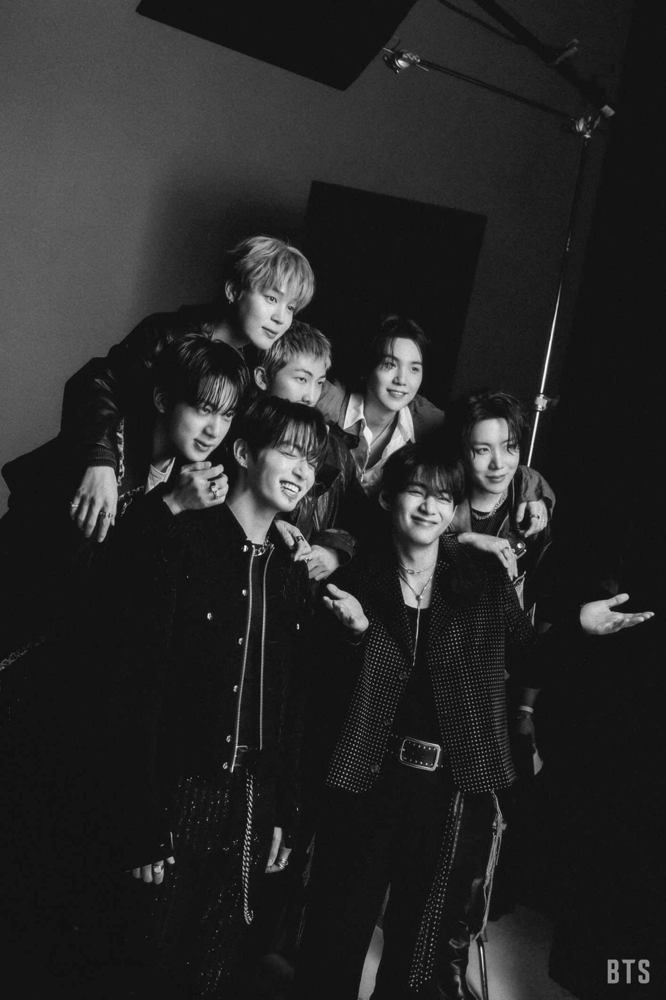

Who is BTS?
"7 Normal boys from Korea - RM"
BTS (Korean: 방탄소년단),also known as Bangtan sonyeondan, is a South Korean boy band formed in 2010 around RM (Kim Nam-joon), an underground rapper well known on the music scene in Seoul. Seeing a need for diversified income streams, Bang Si-hyuk (CEO) decided to form an idol group instead, because of the potential for live concert performances and passionate support from fans of such groups. The band consists of 7 members: RM, Jin, Suga, J-Hope, Jimin, V, and Jung Kook.
Since their formation, BTS have believed that telling their own stories is the best way for the younger generation to relate to their music. Writing many of their own lyrics, the group discusses universal life experiences such as sadness and loneliness in their work and turn them into something lighter and more manageable. Although BTS weren't the first to open the doors to K-Pop worldwide, they were the first to become mainstream. They don't just appeal to young people but also to the 50s and 60s age demographic.